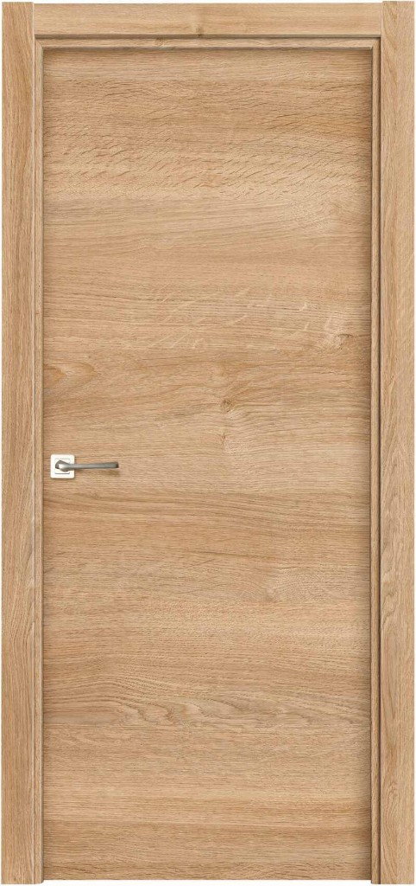
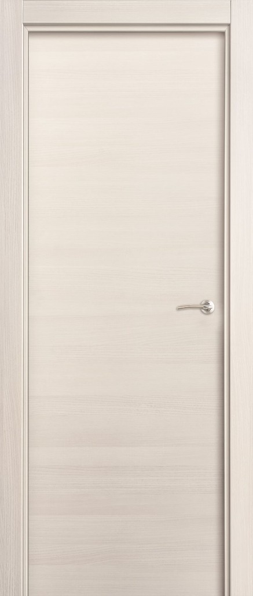
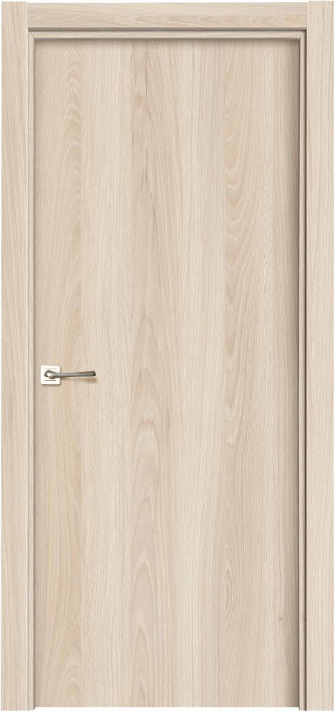
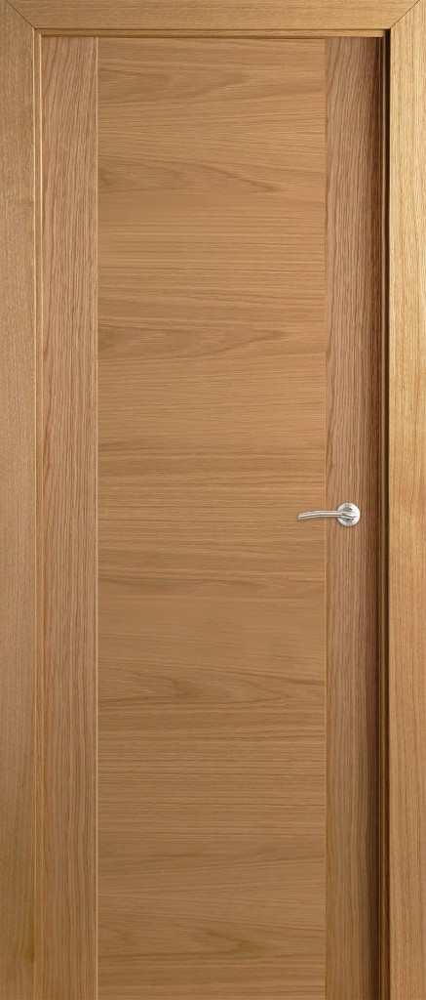
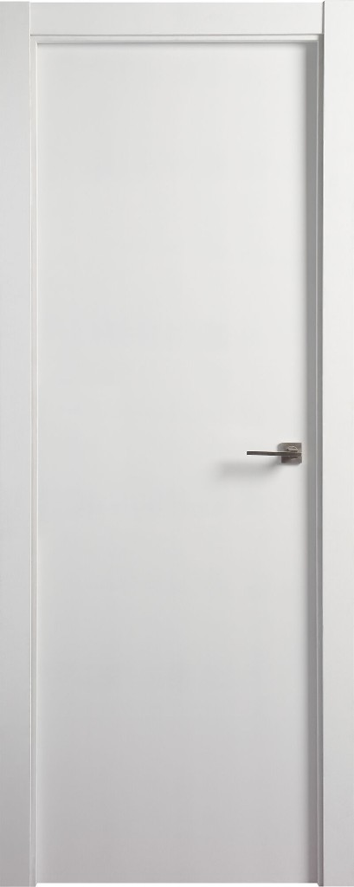
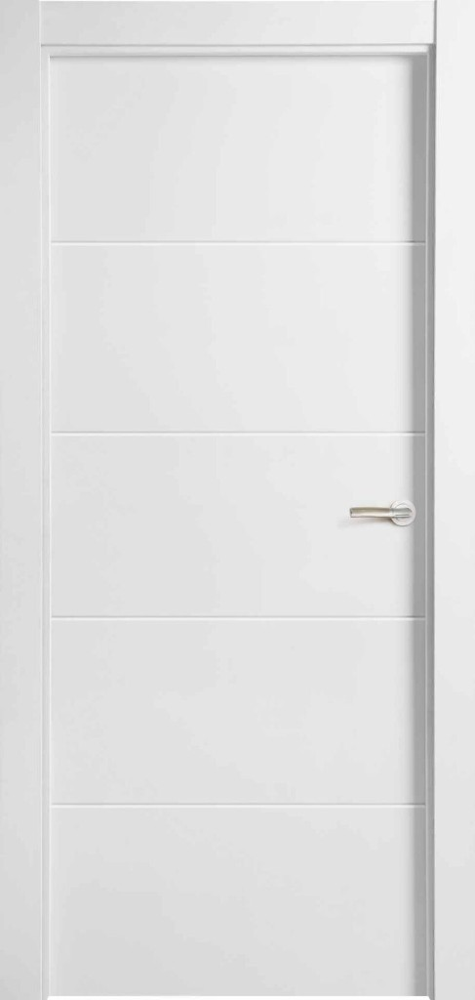
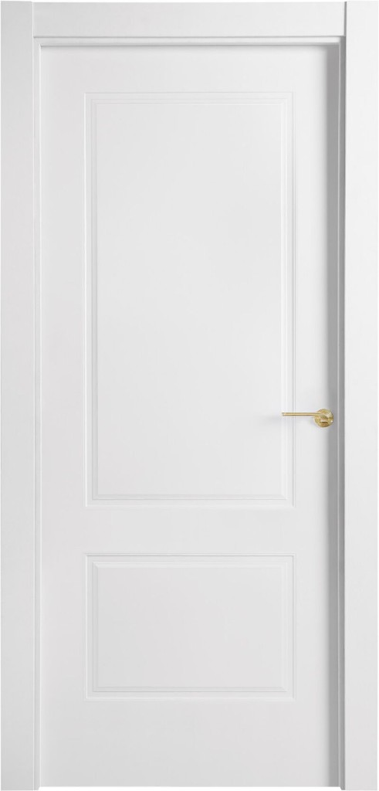

Puertas
Puertas de interior para habitaciones, baños y distribuciones. Diseños clásicos y modernos para cada espacio.
Puertas de Interior
Amplia variedad de puertas de paso para habitaciones, baños, cocinas y distribuciones. Diseños que se adaptan a estilos clásicos, modernos y contemporáneos.
¿Por qué elegir nuestras puertas?
Catálogo de puertas
Selecciona el tipo para ver acabados, medidas y características
Laminadas

Roble Nature
Fresno Slovenia
Nogal ArenaAcabados
Composición
Puerta de aglomerado maciza de 35 mm. Tablero de 650 kg/m² laminado en ambas caras. Diseño decorativo con impregnación especial y acabado con poro natural.
Complementos
Batiente extensible, junquillo de vidrio, zócalo 90, kit corredera, panel puerta entrada.
Medidas
Ancho: 62,5 · 72,5 · 82,5 cm
Alto: 203 cm
Madera

Malta C6 RobleAcabado
Composición
Recercado perimetral de madera noble. Interior aglomerado estándar (600-650 kg/m²). Chapa de madera natural barnizada de primera calidad de 0,5 mm.
Complementos
Batiente 20 mm hidrófugo, junquillo de vidrio, zócalo 90 hidrófugo, kit corredera interior hidrófugo, panel puerta entrada.
Medidas
Ancho: 62,5 · 72,5 · 82,5 cm
Alto: 203 cm
Lacadas

100
400
670Composición
Bastidor perimetral de madera de pino o MDF. Interior aglomerado de baja densidad (500 kg/m²). Paramentos exteriores MDF de 3/4 mm. Canteado 2 largos.
Complementos
Batiente 20 mm y extensible hidrófugo, junquillo vidrio, kit corredera interior hidrófugo, zócalo 90/120 hidrófugo, panel puerta entrada.
Modelos
Modelo 100: también en 92,5 cm de ancho.
Medidas
Ancho: 62,5 · 72,5 · 82,5 cm
Alto: 203 cm
DM prelacada
Medidas disponibles
- 203 cm alto: 62,5 · 72,5 · 82,5 · 92,5 cm ancho
- 211 cm alto: 62,5 · 72,5 · 82,5 cm ancho
Premarcos
Disponibilidad
Contamos con premarcos para completar la instalación de tus puertas.
Especificaciones
Ancho: universal
Grueso: 70 · 90 · 100 · 110 · 120 · 140 mm
Visita nuestras exposiciones en Oviedo y Lugones para ver las muestras en persona y recibir asesoramiento personalizado.
¿Buscas puertas de interior?
Visita nuestras exposiciones en Oviedo y Lugones o contacta con nosotros para asesoramiento y presupuesto sin compromiso.